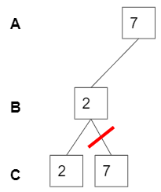
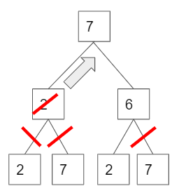
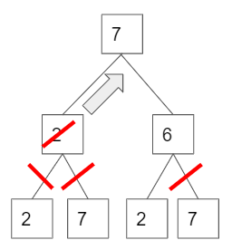
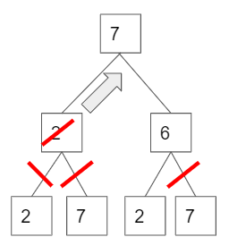
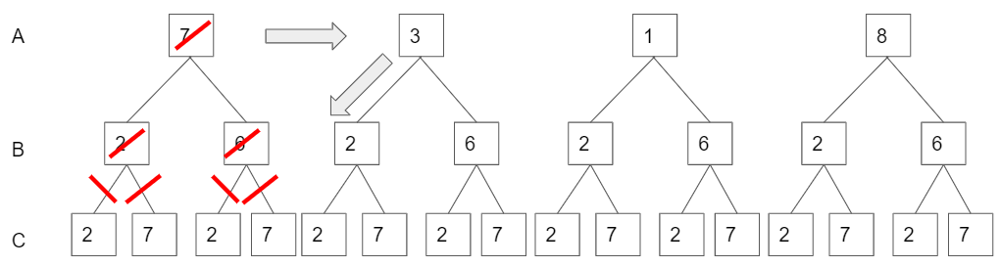

Yeji Park
Sudoku solver
(using forward checking and back tracking)
Sudoku solver Demo
Github repository0. Problem description
There are 2 rules in playing the sudoku.
1. Each line should contain 1 to 9 without repeating itself, vertically and horizontally.
2. Each block which consists of 3*3 boxes should contain 1 to 9 without repeating itself.
more informaiton
Each cell has its domain, which initially {1,2,3,4,5,6,7,8,9} then from the constrains, some elemets can be ruled out.
1. Each line should contain 1 to 9 without repeating itself, vertically and horizontally.
2. Each block which consists of 3*3 boxes should contain 1 to 9 without repeating itself.
more informaiton
Each cell has its domain, which initially {1,2,3,4,5,6,7,8,9} then from the constrains, some elemets can be ruled out.

For example, cell A cannot have 1,3,4,7,8. There for the possible asnwer domain of cell A is {2,5,6,9}.
For the cell B, it cannot be 1,2,3,4,5,6,8,9. so the only one element in domain, {7}. Therefore, the cell B should be 7.
The main point is that each cell has its domain, so 81 domains. By ruling out some impossible answers from domain of cells, we could find the answer for the cells.
1. The concept of forward checking
Previously, we figured out the cell B is 7. We are solving sudoku with computer, so the domain of each cells can be stored in the memory and can be revised.
We wil delete 7 in the domains of the cell which are in the same row, column and the block. It is called "Domain revision".

Easy problem can be solved by only forward checking, but It is not enough to solve harder level of sudoku. Let's say, we finished all forward checking, but some cells are not decided yet. Then what should we do now?
We wil delete 7 in the domains of the cell which are in the same row, column and the block. It is called "Domain revision".
Easy problem can be solved by only forward checking, but It is not enough to solve harder level of sudoku. Let's say, we finished all forward checking, but some cells are not decided yet. Then what should we do now?
2. Forward checking with back tracking
Here is a sudoku, but could not be solved only by forward checking. so now, we need to try out some numbers and then if it can be possible or not.
Let's focus on cell A,B and C.(Other cells are out of our focus for this explanation.) Each has the domain of {1,3,7,8}, {2,6} and {2,7}. All combination of (A,B,C) can be represented as a tree below.


Back tracking starts from assigning a possible value to the cell. Let's assume we assign 7 to cell A. Since the cell A and cell C interacts, cell C cannot be 7. As soon as A is assigned as 7, the forward checking algorithm checks the domain of other cells which interacts with cell A and delete 7 from the domain.so regardless of value of cell B, C cannot have 7.(The first picture below)
Once 7 is removed from the domain, the part of tree can be pruned. In the second picture, When A is 7 and 2, there is no elements left in the domain of cell C, which means A=7 and B=2 together cannot be the answer. now, it checks another possible answer for cell B, but cell A is still 7. (The third and fourth pictures below.) This process is called back tracking.
Back tracking starts from assigning a possible value to the cell. Let's assume we assign 7 to cell A. Since the cell A and cell C interacts, cell C cannot be 7. As soon as A is assigned as 7, the forward checking algorithm checks the domain of other cells which interacts with cell A and delete 7 from the domain.so regardless of value of cell B, C cannot have 7.(The first picture below)
Once 7 is removed from the domain, the part of tree can be pruned. In the second picture, When A is 7 and 2, there is no elements left in the domain of cell C, which means A=7 and B=2 together cannot be the answer. now, it checks another possible answer for cell B, but cell A is still 7. (The third and fourth pictures below.) This process is called back tracking.

 



The picture below is overall image of what we did before.

If there is no possible combination when cell A is 7, then now the value of cell A is changed, also backtracking.
